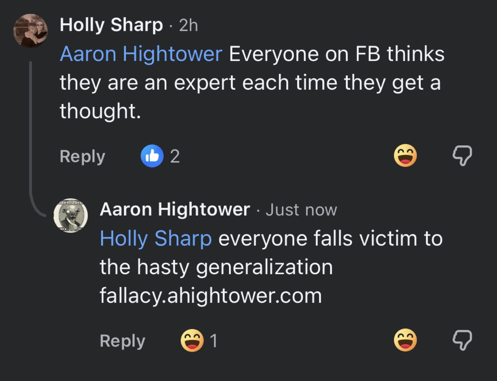

The Surface Reading
A woman named Holly posts a clean observation: everyone on Facebook thinks they are an expert the moment a thought arrives. It is a familiar complaint about the platform’s noise. The reply arrives almost immediately.
“everyone falls victim to the hasty generalization fallacy.ahightower.com”
To a stranger scrolling past, the move can land as queer. Not in the sexual sense — in the older, sharper sense of the word: odd, off-angle, slightly alien. The reply does not match the social register. It names a formal fallacy. It drops a domain. It treats a casual complaint as an instance of a known cognitive error and points the reader toward a site that catalogs such errors.
The first impression is of a man who cannot leave a generalization alone. Someone who would rather classify the thought than simply agree with its feeling. In the rapid ecology of Facebook comments this can read as pedantic, superior, or simply strange.
What the Pattern Actually Is
The oddness is not random. It is the visible edge of a long operating system.
For more than three decades Aaron Hightower has been occupied with the same underlying problem: how to separate genuine human signal from noise, chance, and self-deception. The tools have changed — Amiga code, arcade high-score systems, motion-to-photon latency, cryptographic verification, legal skill-game frameworks — but the question has not.
In 1991 he wrote Yet Another Tetris Clone on the Amiga. In the late 1990s, while lead programmer on San Francisco Rush 2049 at Atari Games, he locked a correct SHA-256 implementation into the coin-op high-score system under deadline pressure so the machine could verify its own top players. Later he held patents on wearable display architectures that drove motion-to-photon latency from double-digit milliseconds toward single-digit nanoseconds. He ran a company that tried to build high-stakes skill-based gaming platforms under California’s dominant-factor test. After retiring in 2018 he returned to the same problem with CELLTOWER: a mobile NES-style Tetris whose entire purpose is to measure and cryptographically attest to human cognitive effort in a form that bots cannot convincingly fake.
The Facebook reply is not a personality quirk pasted on top of an otherwise ordinary life. It is the same instrument applied to a different surface. A hasty generalization is a form of noise. Naming it and pointing to a standing resource is an attempt — small, public, imperfect — to reduce that noise.
Why It Feels Queer on First Contact
Most people learn social fluency as the primary filter. They learn when a correction is worth the social cost and when it is better to let the generalization pass. Aaron’s filter is inverted. The cost of letting a clear cognitive error stand unremarked is higher, in his internal accounting, than the cost of appearing slightly strange.
This inversion produces the queer first impression. The man seems to be optimizing for a different variable than the one the platform rewards. He is not primarily optimizing for belonging, agreement, or emotional congruence. He is optimizing for the reduction of certain classes of error and for the construction of systems that can still measure human skill after the bots arrive.
The same pattern appears in the local Tower District work, in the insistence on verifiable sources, in the long mapping of latency crossovers, and in the current attempt to build a proof-of-human-cognition engine that remains legal under California law. The first impression is not a mask. It is a thin edge of a consistent architecture.
The Peculiar Aspects Worth Knowing
If you have never met him and the Facebook reply is your first data point, the following peculiarities are the ones that tend to matter later:
- 01 He treats language as an instrument that can either clarify or obscure. Fallacies are not academic curiosities; they are failure modes that compound when left unexamined.
- 02 His professional history is continuous around the measurement of human performance under constraints — high-score systems, skill-based wagering, ultra-low latency rendering, cryptographic attestation of decision paths.
- 03 He is retired from income-seeking work but not from building. The current project is designed so that genuine human hesitation and choice can still be distinguished from automated play and then rewarded under existing California law.
- 04 Local community work in Fresno’s Tower District follows the same logic: reduce noise, increase signal, keep the record public and checkable.
- 05 The intensity can read as cold or pedantic on first contact. In longer contact it more often resolves as a form of care for the integrity of shared judgment.
None of this requires agreement. It only requires that the first impression not be taken as the complete map.
Closing Reflection
The hasty generalization is an easy fallacy to commit and a hard one to stop committing. Holly’s original observation is itself a generalization about people who generalize. Aaron’s reply is a generalization about people who fall for generalizations. Both statements contain truth and both overreach. The difference is that one of them knows the name of the trap and keeps a public page that tries to keep the trap visible.
That is the peculiar thing. The first impression feels queer because the person is running a continuous, low-level audit of the reliability of human thought in public. Most people do not do that. Most people optimize for other goods. When the two operating systems meet in a comment thread, the friction is immediate and the oddness is real.
The rest of the pattern — the patents, the arcade systems, the current verification engine, the local groups — is simply the same audit written at larger scale and across longer time. Once that is visible, the Facebook reply stops looking like an isolated eccentricity and starts looking like a consistent, if unusual, way of being in the world.
This piece was written from the High Tower District in Fresno for readers who encounter the public surface before they encounter the person. The domain referenced in the exchange is fallacy.ahightower.com. The larger ongoing project is CELLTOWER.